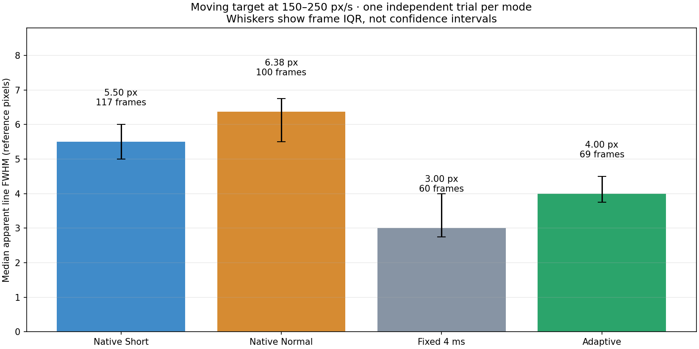
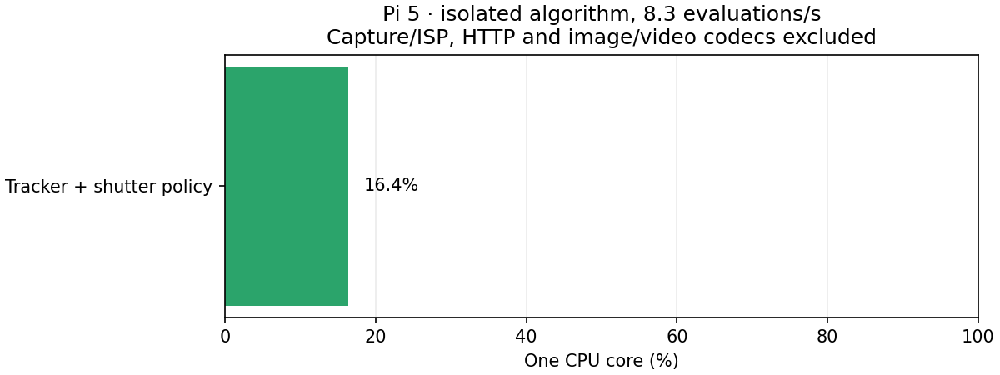

Target experiment / Опыт на мишени
English · Русский · Data / Данные
Actual luminance. Separate recordings aligned by movement onset; speeds differ. / Реальная яркость. Отдельные записи совмещены по началу движения; скорости различаются.

Adaptive: −27.3% vs Short, −37.3% vs Normal in the common speed band. Fixed 4 ms was sharper in motion. One trial per mode. / Адаптивный: −27,3% к Short, −37,3% к Normal в общем диапазоне скоростей. Постоянные 4 мс резче в движении. Один опыт на режим.

Capture, ISP, JPEG, HTTP excluded. / Захват, ISP, JPEG и HTTP исключены.
Method and limitations · Методика и ограничения · Files / Файлы
Indoor experiment; road detection not validated. / Комнатный опыт; дорожная детекция не проверена.